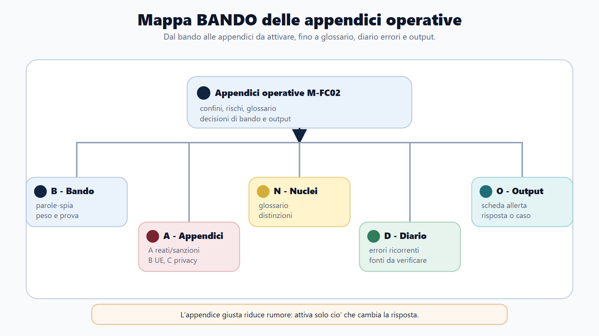
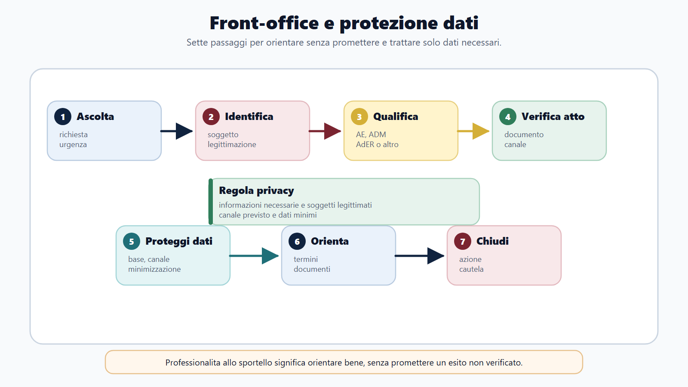
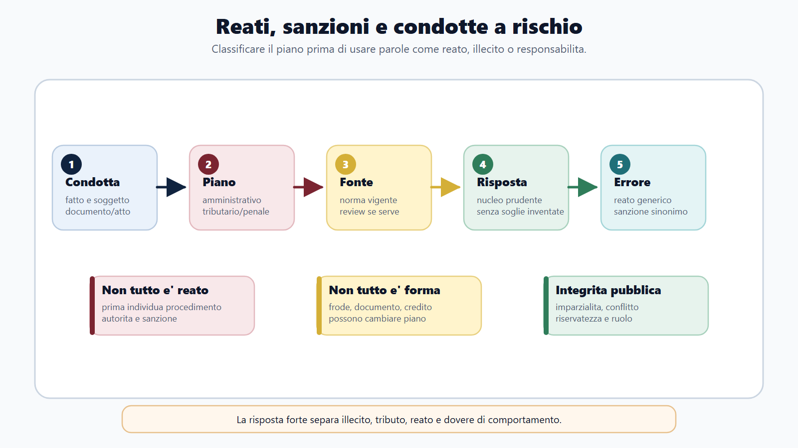
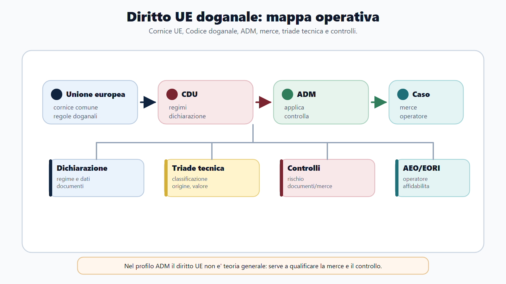
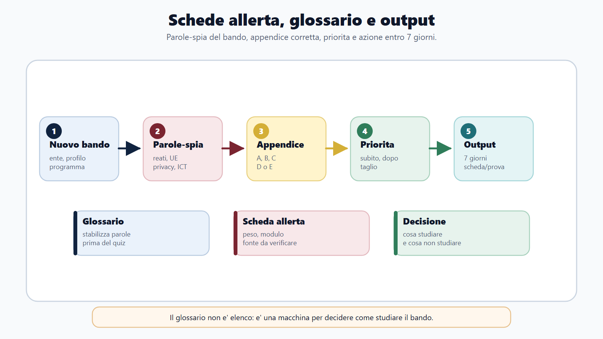

VOL-03 · Capitolo 31
M-FC02
Appendici operative
Le appendici raccolgono gli strumenti di lavoro di M-FC02. Si usano dopo aver studiato il paragrafo indicato: si compila lo strumento e si registrano gli errori. Per termini, soglie, modelli, software e scadenze mobili si annotano sempre la fonte ufficiale e la data del controllo.
01 · Il problema in prova
Non un riassunto autosufficiente
Trattare il workbook come un sunto del modulo è l’errore tipico. Se non sai spiegare il motivo di una casella, torna al capitolo. Protocollo: leggi il rinvio teorico, compila senza appunti, confronta con l’esempio, registra errore e nuovo tentativo.
Che cosa ottieni
Richiamare il lessico specialistico, distinguere istituti vicini, ordinare adempimenti e processi, compilare i canvas per i casi e l’orale, programmare il ripasso a partire dagli errori.
A che serve in prova
A collocare ogni concetto nella fase corretta e a non inventare scadenze. Il canvas deve portare a una decisione verificabile. Gli errori emersi guidano i successivi quiz, casi e allenamenti orali.
Ogni casella identifica un fatto, una fonte, una competenza o una decisione.
Parole generiche come «controllo» o «ricorso» non compilano lo strumento. Una scadenza memorizzata l’anno scorso non si riporta senza verifica su soggetto, periodo, modello e data del controllo.
02 · BANDO
Cinque decisioni, cinque strumenti
| Domanda | Strumento | |
|---|---|---|
| B — Bando | Che cosa è richiesto e con quale profondità? | Scheda allerta |
| A — Aree | In quale ciclo si colloca? | Tavole e flussi |
| N — Nuclei | Quali definizioni e distinzioni? | Glossario |
| D — Diario | Quale errore devo recuperare? | Piano 1-3-7-14-30 |
| O — Output | Che cosa devo produrre? | Canvas e checklist orale |
03 · Mappa
Allerta, glossario, output
Gli strumenti si collegano in un unico percorso. Servono a decidere che cosa studiare, dove e con quale prova, non a sostituire i capitoli.

Dal bando al glossario, dalle tavole al canvas, dal diario al ripasso: un ciclo, non un elenco di schede.
04 · Glossario
Che cos’è, a che serve, da che cosa si distingue
Per ogni voce spiega le tre cose, poi copri la colonna «distinzione» e ricostruiscila a voce. Recitare una definizione senza distinzione è dove nasce il distrattore.
| Voce | Significato operativo | Non confondere con |
|---|---|---|
| Dichiarazione | Rappresentazione di dati fiscalmente rilevanti. | Pagamento |
| Liquidazione | Determinazione periodica del saldo. | Accertamento |
| Compensazione | Uso di un credito alle condizioni vigenti. | Rimborso |
| Rivalsa IVA | Addebito dell’imposta secondo il sistema. | Detrazione |
| Origine | Legame economico della merce con un Paese. | Provenienza fisica |
| Deposito fiscale | Luogo autorizzato per operazioni su prodotti soggetti ad accisa. | Deposito comune / esenzione |
| Catasto | Inventario amministrativo degli immobili. | Prova della proprietà |
| Rateizzazione | Pagamento dilazionato. | Cancellazione del debito |
05 · Tavole
Tre confronti che tornano in prova
Una differenza dichiarazione-versamento apre prima una verifica; non produce da sola una cartella. Merce spedita da A, lavorata in B e importata: spedizione, origine, classificazione e valore non coincidono. Visura catastale e ispezione ipotecaria rispondono a domande diverse.
| Tavola | Domanda | Errore tipico |
|---|---|---|
| Adempimento, accertamento, riscossione | Che cosa dichiara, come si forma la pretesa, come si recupera? | Saltare da anomalia a esecuzione. |
| Classificazione, origine, valore | Che cosa è? Dove è originaria? Quanto vale in dogana? | Usare il Paese di spedizione come origine. |
| Catasto e pubblicità | Identificativi e rendita, oppure formalità e vicende? | Trattare l’intestazione catastale come prova definitiva. |
Compila evento, soggetto e fonte prima della data. «Liquidazione IVA periodica»: periodo e termine da verificare per il soggetto; fonte consultata il __/__/____. Ricordare una data senza soggetto, periodo e fonte è un errore di metodo.
06 · Flussi
Cinque schemi di processo
Su ogni freccia annota fatto, fonte, competenza e documento. Se un dato manca, scrivi «da verificare».
| Area | Sequenza |
|---|---|
| Accertamento | Dato → selezione → potere → evidenze → contraddittorio → motivazione → atto → tutela |
| Riscossione | Titolo → carico → comunicazione/cartella → pagamento/rate → sospensione/sgravio → cautela/esecuzione |
| Dogane | Arrivo → custodia → dichiarazione → controlli → triade → regime → debito/garanzia → svincolo |
| Accise e giochi | Prodotto/gioco → fatto generatore → esigibilità → soggetto → regime → documento/sistema → controllo |
| Catasto | Immobile → identificativi → evento → procedura → documento → controllo → esito |
Uno scostamento apre una verifica, non dimostra da solo la pretesa. Pagamento già eseguito: identificare carico, prova, ente e canale senza promettere subito lo sgravio. Frazionamento e vendita richiedono verifiche geometriche, catastali e immobiliari distinte.
07 · Canvas
Fatti prima della regola
Ente e profilo; fatti certi e dati mancanti; fase del ciclo; soggetti e competenze; fonte e regola; procedura; decisione motivata; errore da evitare; output e verifica. Errore tipico: iniziare citando una norma non collegata ai fatti.
Routing del bando
La sola presenza di una materia non basta ad aggiungerla a M-FC02. Trascrivi le parole del bando, collega alle attività del profilo, verifica se il nucleo è già in M-FC02 o nel volume base. Se caratterizza un’altra famiglia, usa il modulo dedicato. Se manca una destinazione consolidata, registra un gap: non promettere copertura.
Esempi di perimetro
Crisi d’impresa essenziale: resta in M-FC02 per distinzione e segnali; le procedure avanzate richiedono fonte dedicata. Gare e PNRR a peso specialistico: non duplicare. Profilo ADM informatico con prova tecnica prevalente: M-FC02 dà il contesto dell’ente, il percorso specialistico è il modulo digitale.
08 · Front-office
Identità, competenza, dati, canale
Prima di rispondere si verificano identità e titolo del richiedente, competenza dell’ufficio, finalità, necessità dei dati e sicurezza del canale. Assistere l’utente non significa divulgare informazioni.

Caso: una persona telefona per la posizione fiscale di un familiare. L’operatore non conferma alcun dato. Manca titolo e canale idoneo: spiega la procedura corretta e, quando previsto, registra l’orientamento.
09 · Piani giuridici
Sanzione, reato, tutela, diritto UE
Chiarisci anzitutto la natura dell’illecito, dell’atto o della fonte. Se il quesito coinvolge più piani, esaminali separatamente e nell’ordine in cui operano. Un’irregolarità dichiarativa può determinare recupero e conseguenze amministrative; l’eventuale rilievo penale richiede i suoi presupposti. La tutela contro l’atto segue ancora un piano distinto.
Chiamare «reato» ogni violazione fiscale o usare «ricorso» senza indicare atto, autorità e fase. Regolamento, direttiva e disciplina nazionale producono effetti diversi. Fonte UE e complemento nazionale vanno letti nella corretta gerarchia.
Prima si qualifica la condotta; poi, se serve, si individua la fonte unionale applicabile.

10 · Diritto UE
Fonte, ambito, raccordo nazionale
La seconda mappa si usa soltanto dopo avere individuato la fonte applicabile. Il raccordo tra diritto unionale e nazionale è un controllo distinto dalla qualificazione dell’illecito. IVA e dogane, in particolare, non si spiegano con il solo diritto interno.

Quale regola unionale e quale complemento nazionale governano la fase? CDU e D.Lgs. 141/2024 restano l’esempio-guida del modulo.
11 · Orale e ripasso
Checklist e piano 1-3-7-14-30
Checklist orale: definizione in una frase; funzione e fase; distinzione; soggetti; conseguenza; esempio; dato mobile segnalato, non inventato; collegamento al profilo. Prepara versioni da 60, 120 e 240 secondi e registrale. Elencare norme e sigle senza ragionamento è l’errore.
| Giorno | Che cosa fai |
|---|---|
| 1 | Mappa del nucleo. |
| 3 | Quiz o micro-caso. |
| 7 | Orale. |
| 14 | Collegamento con istituti vicini. |
| 30 | Simulazione. |
Origine doganale: definizione e provenienza; caso; orale; collegamento con classificazione e valore; caso completo. Segnare il ripasso dopo una rilettura passiva non conta.
12 · Caso integrato
IVA, merce, pagamento
Una traccia presenta dati IVA incoerenti, una merce importata collegata alle operazioni e un successivo problema di pagamento. Una semplice lista di IVA, dogane e riscossione non risolve la traccia.
| Passaggio | Output |
|---|---|
| 1 | Separa adempimento, controllo, accertamento e riscossione. |
| 2 | Ricostruisci classificazione, origine e valore. |
| 3 | Compila il canvas distinguendo fatti certi e mancanti. |
| 4 | Prepara un orale da 120 secondi. |
| 5 | Registra l’errore nel piano 1-3-7-14-30. |
Come distingui accertamento e riscossione? L’accertamento ricostruisce e formalizza la pretesa; la riscossione riguarda pagamento o recupero sulla base del titolo pertinente. Nel caso: atto, soggetto competente, fase, garanzie e seguiti.
13 · Checklist rapide
Redditi, IVA, sette domande privacy
Redditi e IVA
Soggetto e categoria? Utile, imponibile e imposta distinti? Dichiarazione, liquidazione e versamento separati? Presupposti e territorialità IVA? Rivalsa e condizioni della detrazione? Un credito dichiarato non è automaticamente utilizzabile. IVA esposta su un acquisto non implica detraibilità.
Autoverifica sportello
Identità verificata? Titolo sufficiente? Ufficio competente? Finalità chiara? Dati minimizzati? Canale idoneo? Decisione tracciata? Promettere un esito o comunicare un dato «per fare prima» resta l’errore.
Lunedì teoria imposta; martedì IVA e redditi; mercoledì accertamento; giovedì riscossione e front-office; venerdì dogane e accise; sabato catasto e contabilità; domenica errori rossi e test misto.
14 · Mini-esercizio
Un nucleo rosso, cinque prodotti
Scegli un nucleo ancora debole e produci: una voce di glossario, una tavola, un canvas, un orale da 120 secondi e la prima riga del piano di ripasso. Se compare un dato mobile, aggiungi fonte e data.
| Prodotto | Criterio di riuscita |
|---|---|
| Glossario | Definizione, funzione, distinzione, senza path interni. |
| Tavola | Due istituti vicini e l’effetto che cambia. |
| Canvas | Fatti certi, dati mancanti, fase, competenza, decisione. |
| Orale 120" | Definizione, distinzione, sequenza, esempio, prudenza. |
| Piano | Giorno 1 mappato; prossimo tentativo datato. |
15 · Da tenere ferme
Cinque regole, con il perché
1. Usa le appendici dopo aver studiato la teoria, non al posto dei capitoli.
2. Colloca ogni concetto nella fase corretta e distinguilo dagli istituti vicini.
3. Per scadenze e dati mobili registra fonte e data del controllo.
4. Il canvas deve portare a una decisione verificabile, partendo dai fatti.
5. Gli errori emersi guidano quiz, casi e orali successivi, con il piano 1-3-7-14-30.
16 · Allerta bando
Che cosa studiare, dove, con quale prova
La scheda allerta chiude il modulo: trascrivi le materie con le parole del bando, il peso, la prova. Se è cambiata la famiglia professionale, non accumulare appendici. M-FC02 resta il percorso delle Agenzie fiscali; il volume continua con gli enti pubblici non economici.

Glossario e strumenti servono a decidere il perimetro. Se manca una destinazione consolidata, annota il gap e non promettere copertura.
Prossimo capitolo
Lavorare negli enti pubblici non economici
Il modulo M-FC02 è chiuso con gli strumenti operativi. Il volume passa a M-FC03: INPS, INAIL e gli altri EPNE. Stesso Metodo BANDO, altra famiglia di funzioni.